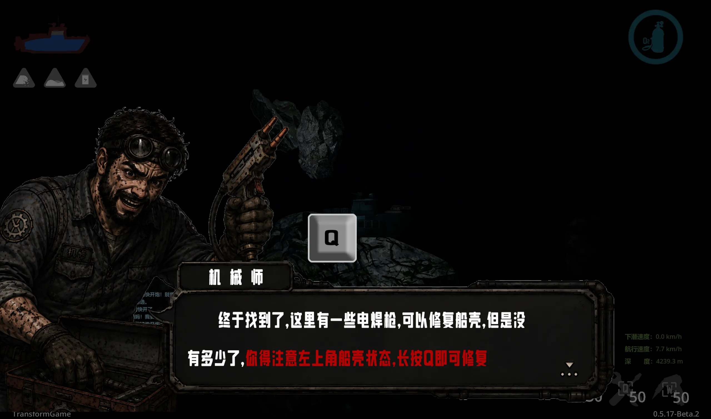
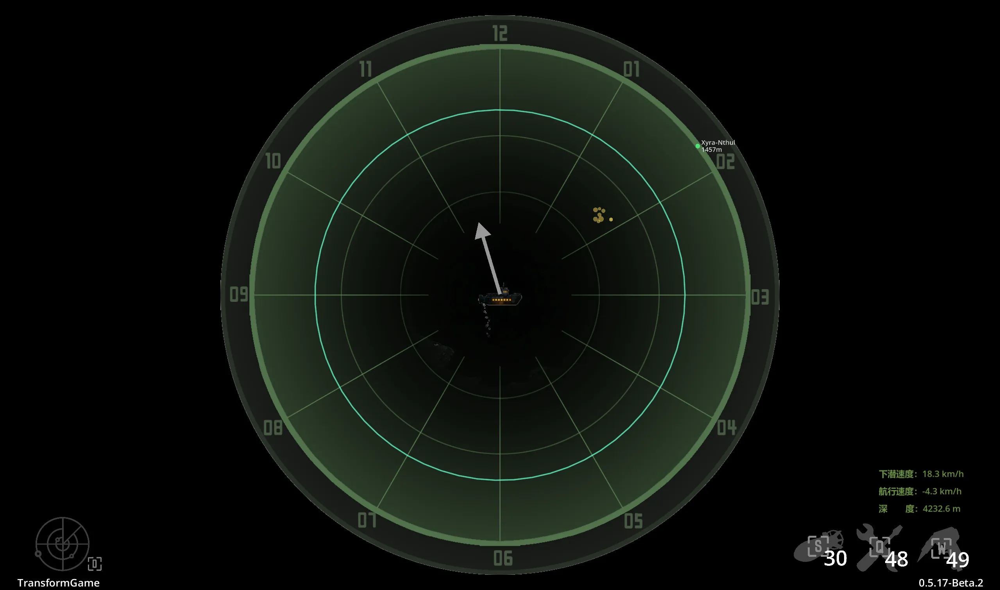
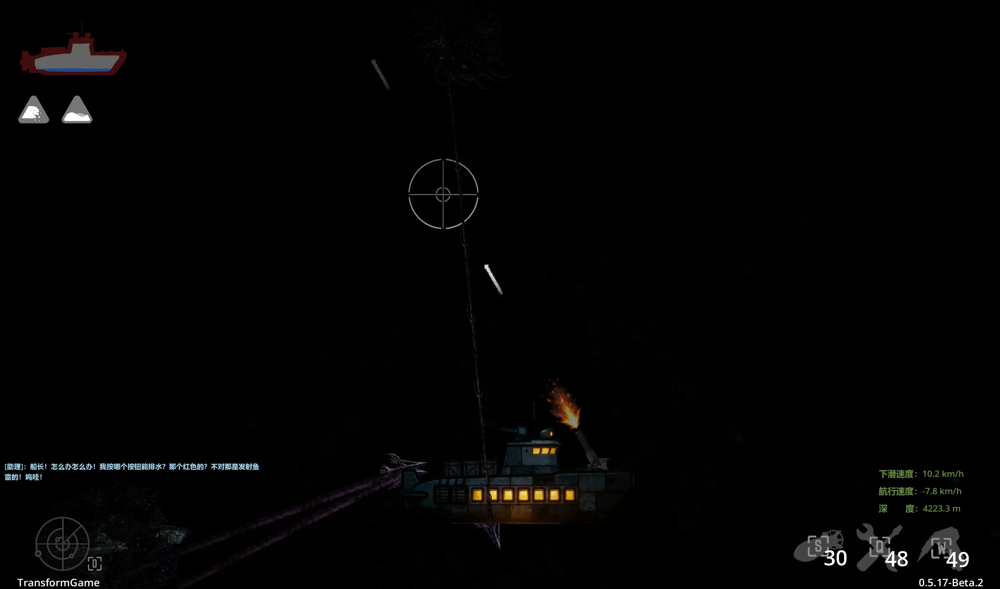

Case 05 / 08
深海航运
一款 HD2D 俯视视角的潜艇生存 Demo：在几乎一片漆黑的海底靠声纳摸索前行，同时管理船壳、 进水、氧气、电力与武器，穿越深海抵达终点站。这是目前我参与过的最完整的一个项目之一， 也是第一次让 AI 通过 MCP 直接操作引擎来写代码，接节点。
概览与技术栈
玩法一句话能说完：你是一艘深海潜艇的船长，屏幕上除了自己船上的灯，几乎什么都看不见， 只能主动开声纳扫一圈，靠回声和雷达盘判断礁石、怪物和终点站在哪儿，然后在氧气用完之前 开到终点站去。船壳会破、会进水、会下沉，电力会停，进水超过一半就开始耗氧—— 这几件事串在一起，逼着你在「继续往前」和「停下来修」之间做选择。
这个项目和前面几个最大的不同是它的组织方式。它不是「我用 AI 写了个游戏」，
而是先把开发流程本身设计了一遍：全项目强制 MVC 分层，每个模块都是
Model（纯数据与计算）/ View（只负责渲染）/ Controller（读输入、驱动 Model）三件套，
数据流只允许「输入 → Controller → Model → View」，不许跳层；物理公式、参数范围、
硬约束全部写成规则文件放在 .trae/rules/ 下，AI 每改一次代码之前先读规则；
代码里可调的值标 ↓↓↓、锁死不许动的值标 #不可修改。
有了这套约束，AI 才能在没有人在旁边盯着的时候，也写出风格一致的代码。
技术上另一个比较特别的地方是物理和碰撞都没用引擎自带的那套。所有能动的实体——玩家潜艇、 怪物——走的是同一套自己写的「七步积分」：推力、线性水阻、洋流力合成加速度，更新速度， 限速，再更新位置；碰撞也是脚本里自己实现的，用分离轴定理做 OBB 矩形检测， 算出穿透法线和深度再弹开。这么做一开始是为了可控，后来发现好处是手感真的能一点点调出来—— 船的惯性、洋流推着你偏航的感觉，都在几个参数里。
技术栈
- 引擎
- Godot 4.7
- 架构
- 全项目强制 MVC 三层，数据流不得跳层
- 物理
- 脚本自实现的七步积分，不使用引擎刚体
- 碰撞
- 自实现 SAT / OBB 分离轴检测，低弹性响应
- 呈现
- HD2D：3D 节点承载 2D 贴图，相机垂直俯拍，z 只用来分层
- 核心玩法
- 声纳：视野遮罩 shader + 雷达盘 + 扫描波与光斑
- AI 工具
- Godot MCP 插件 + 规则文件，主模型 DeepSeek v4 Pro
团队分工
文档里把「怎么写对」和「数值定多少」明确分给了两边，这条线是整个流程能跑起来的关键：
- 写逻辑
- AI：按 MVC 与规则文件生成各模块的 Model / View / Controller
- 审核与修正
- 人：逐条读 AI 生成的代码，查是否合规则、有没有 bug、有没有跳层
- 调数值
- 人：在 Inspector 里调可调参数，稳定后回填到数值配置表
- 关键决策
- 人：玩法设计、系统架构、内容取舍、版本调优全部由团队拍板
截图与演示
依次是主视觉、开局的新手引导、声纳雷达盘，以及一段实际游玩的录屏。视频默认不加载也不 自动播放，点了播放按钮才开始下载——这段录屏接近 170MB，需要等一会儿。




技术文档
这个项目的技术文档写得比较全，一共十三个章节，从目录结构、模块详解、数值配置一直到 硬约束清单和使用 AI 的开发方法。完整版放在下面可以下载，这里挑几处我觉得最值得讲的。
MVC 分层是硬规定，不是建议。 每个功能模块都拆成三个文件：Model 是纯数据加计算，不允许引用任何节点；View 只读 Model 渲染，不许写 Model、也不许读输入；Controller 读输入、更新 Model，再调 View 同步。 数据流只允许一条路——输入 → Controller → Model → View，禁止跳层。这么定是因为 AI 很容易 「顺手」把界面逻辑和数值算在一起，等发现的时候已经拆不开了。
物理和碰撞都是自己写的。 所有移动实体走同一套七步积分：先算推力、线性水阻和洋流力的合力，除以质量得到加速度， 累加到速度上，限速，最后按速度更新位置。玩家额外还有进水带来的下沉力、深度积分和钩子拉力。 碰撞没有用引擎的刚体，而是脚本里用分离轴定理做 OBB 矩形检测，算出穿透法线和深度再弹开； 玩家身上挂两个矩形（主体加驾驶舱），石头和怪物是带旋转的 OBB，边界墙只把船推出去、 并且把朝墙的速度分量清零，防止穿墙。
怪物的身体是一条刚性点链。 每只怪物只有一个主控点，就是头——物理、洋流、行为决策全都只驱动头部；身体各段纯被动跟随， 而且是「前一段的尾接后一段的头」，同一个世界点，不留缝隙、没有弹簧也没有阻尼。 仔细看那些大家伙游起来像一节一节的，就是这个结构做出来的效果。肢体挂在指定身体段上， 按速度做正弦摆动，前后肢反相。
声纳既是玩法也是渲染。 屏幕上看不见远处，是因为挂了一张全屏遮罩：以玩家在屏幕上的位置为圆心，半径内清晰、 越往外越黑，两个半径都是可调参数。按 D 开声纳之后，雷达盘强制显示、相机拉到最远， 盘上有大约三秒一圈的扫描波，礁石是金黄色光斑、怪物是红色小光斑、深水炸弹的光斑 跟着引信越闪越急，终点站标记则常亮并标出距离。停电的时候扫描会停、雷达会暗下来。 我最喜欢的一处是：开声纳的同时，怪物的探测范围会放大到 1.5 倍、攻击倾向直接拉满—— 照亮别人的同时也暴露了自己。
一次进水会连锁成一场事故。 船壳破损就进水，进得越多船沉得越快，进水超过 60% 开始耗氧，氧气耗尽就是结束页。 灯光也跟着进水比例走：40% 以下正常，40% 到 60% 会随机闪，60% 以上换成较暗的贴图 并可能停电，到 90% 就必定停电、永久锁定无灯图，而且屏蔽掉后续所有闪烁触发。 修电之后会进入一段电力保护期，期间排水加速、屏蔽停电判定。这套状态机是后期才理清楚的， 在那之前各种状态互相打架，很难复现。
用规则文件约束 AI，是这个项目真正的核心方法。
.trae/rules/ 下放了四个规则文件——总览、MVC 分层、潜艇物理、怪物系统——
每个都是一个主题，结构固定：设计原则、目录结构、各层职责、物理公式、参数范围表、
硬约束、代码风格、修改前检查清单。硬约束写成「禁止……」的清单，比如玩家缩放固定
0.05「不得修改」、怪物死亡必须 queue_free、碰撞一律用 group
查找禁止硬编码节点路径。代码里还用标记区分能不能动：可调参数后面标
↓↓↓，AI 默认不碰、留给人调；锁死的值后面标 #不可修改 或
#不可更改。另外规定了一条：发现数值和规则对不上时先来问，不许自己顺手改。
这套东西写起来很枯燥，但它是「AI 在没有人在旁边时也能产出可维护代码」的前提。
模块之间的通信也定了统一约定：一律用 group 查找节点，禁止硬编码路径，跨模块只读对方
Model 上的公开字段。加一个新功能的标准做法是新建一个 scripts/<模块>/
目录，按 Model → View → Controller 的顺序实现，这样每个模块都能独立审核、独立测试。
Word 文档（.docx，约 73 KB），含目录、整体架构、十三个模块详解、核心系统原理、 数值配置概要、硬约束清单与 AI 开发方法。
导航链接
这是参赛作品，工程文件和代码目前没有公开，也没有部署到线上，所以这里没有可以点的仓库地址。 想试玩或者想看某个模块的实现，可以直接找我要。
- 代码仓库
- 暂无公开仓库
- 在线试玩
- 暂未部署
- 技术文档
- 见上方「技术文档」板块的下载链接